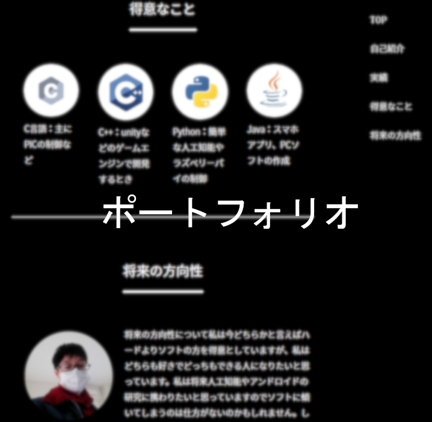
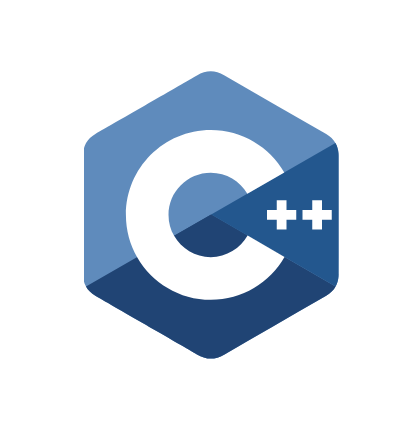
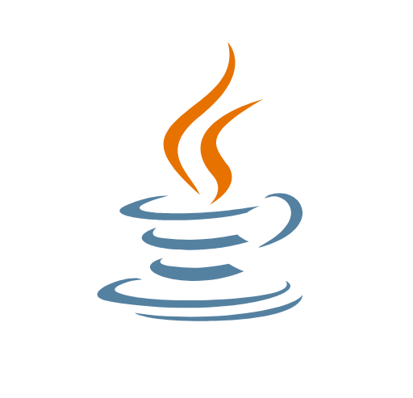
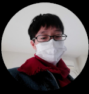

自己紹介
こんにちはkakutekiと申します。現在工業高校に通学しながら、部活、個人で開発を行っています。主にC言語を得意としCでの開発をメインにしています。現在javaを勉強中です。アプリケーション開発なども好きですが、一番大好きなのはロボット開発です。
実績
- 


実績
得意なこと
-

C言語：主にPICの制御など
-

C++：unityなどのゲームエンジンで開発するとき
-

Python：簡単な人工知能やラズベリーパイの制御
-

Java：スマホアプリ、PCソフトの作成
将来の方向性

将来の方向性について私は今どちらかと言えばハードよりソフトの方を得意としていますが、私はどちらも好きでどっちもできる人になりたいと思っています。私は将来人工知能やアンドロイドの研究に携わりたいと思っていますのでソフトに傾いてしまうのは仕方がないのかもしれません。しかし私がこの道に入ったのはrobo-oneの大会で触発されてのものでした。二足歩行ロボット開発の方向に進みたいという気持ちもあります。